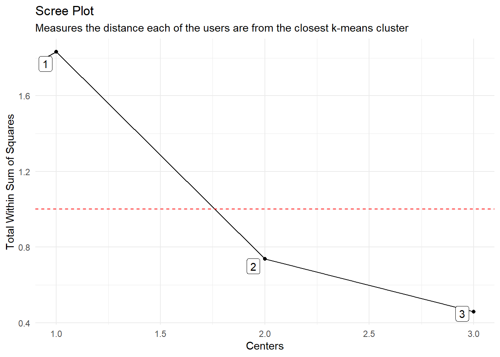

suppressPackageStartupMessages(library(dplyr))
suppressPackageStartupMessages(library(healthyR.ts))Introduction
There are two components to time-series clustering with {healthyR.ts}. There is the function that will create the clustering data along with a slew of other information and then there is a plotting function that will plot out the data in a time-series fashion colored by cluster.
The first function as mentioned is the function ts_feature_cluster(), and the next is ts_feature_cluster_plot()
Function Reference:
We are going to use the built-in AirPassengers data set for this example so let’s get right to it!
Library Load
Data
Now that our libraries are loaded we can go ahead and get the data and run it through the function.
data_tbl <- ts_to_tbl(AirPassengers) %>%
select(-index) %>%
mutate(group_id = rep(1:12, 12))
output <- ts_feature_cluster(
.data = data_tbl,
.date_col = date_col,
.value_col = value,
group_id,
.features = c("acf_features","entropy"),
.scale = TRUE,
.prefix = "ts_",
.centers = 3
)Registered S3 method overwritten by 'quantmod':
method from
as.zoo.data.frame zoo Now that we have our data and our output, lets first take a look at our data so we can see what we passed to it.
glimpse(data_tbl)Rows: 144
Columns: 3
$ date_col <date> 1949-01-01, 1949-02-01, 1949-03-01, 1949-04-01, 1949-05-01, …
$ value <dbl> 112, 118, 132, 129, 121, 135, 148, 148, 136, 119, 104, 118, 1…
$ group_id <int> 1, 2, 3, 4, 5, 6, 7, 8, 9, 10, 11, 12, 1, 2, 3, 4, 5, 6, 7, 8…Now as mentioned, the output list contains many items. There are both data items and plot items.
First though, you will notice in the ts_feature_cluster() function that there is a parameter called .features, this allows you to pass in a list of quoted functions to apply to the time-series. This means that you can create a function your self in the .GlobalEnviron and pass that as a quoted argument to this parameter.
For example you could create your own function called my_mean. Let’s see how this would work.
my_mean <- function(x) ret <- mean(x, na.rm = TRUE) return(ret)
You can then call this by using .features = c("my_mean").
Pretty simple!
Under the hood this function itself makes use of timetk::tk_tsfeatures() which is a tidyverse compliant wrapper to tsfeatures::tsfeatures()
Here are the links to those functions:
Now let’s take a look at the output
Function Output
ts_feature_cluster()
As mentioned there are several outputs from the ts_feature_cluster(). Those are as follows:
Data Section
- ts_feature_tbl
- user_item_matrix_tbl
- mapped_tbl
- scree_data_tbl
- input_data_tbl (the original data)
Plots
- static_plot
- plotly_plot
Now that we have our output, let’s take a look at each individual component of the output.
ts_feature_tbl
output$data$ts_feature_tbl |> glimpse()Rows: 12
Columns: 8
$ group_id <int> 1, 2, 3, 4, 5, 6, 7, 8, 9, 10, 11, 12
$ ts_x_acf1 <dbl> 0.7405485, 0.7301127, 0.7664718, 0.7151592, 0.7296932, …
$ ts_x_acf10 <dbl> 1.552193, 1.499645, 1.622249, 1.457441, 1.479361, 1.609…
$ ts_diff1_acf1 <dbl> -0.09954220, -0.01546920, -0.47063892, -0.25269676, -0.…
$ ts_diff1_acf10 <dbl> 0.4742052, 0.6538733, 0.5623693, 0.4570952, 0.4168840, …
$ ts_diff2_acf1 <dbl> -0.18227012, -0.14657790, -0.62033635, -0.55453480, -0.…
$ ts_seas_acf1 <dbl> 0.2829677, 0.2792932, 0.2947631, 0.2931678, 0.2888097, …
$ ts_entropy <dbl> 0.4945771, 0.4818227, 0.6426700, 0.6798957, 0.8772866, …user_item_matrix_tbl
output$data$user_item_matrix_tbl |> glimpse()Rows: 12
Columns: 8
$ group_id <int> 1, 2, 3, 4, 5, 6, 7, 8, 9, 10, 11, 12
$ ts_x_acf1 <dbl> 0.7405485, 0.7301127, 0.7664718, 0.7151592, 0.7296932, …
$ ts_x_acf10 <dbl> 1.552193, 1.499645, 1.622249, 1.457441, 1.479361, 1.609…
$ ts_diff1_acf1 <dbl> -0.09954220, -0.01546920, -0.47063892, -0.25269676, -0.…
$ ts_diff1_acf10 <dbl> 0.4742052, 0.6538733, 0.5623693, 0.4570952, 0.4168840, …
$ ts_diff2_acf1 <dbl> -0.18227012, -0.14657790, -0.62033635, -0.55453480, -0.…
$ ts_seas_acf1 <dbl> 0.2829677, 0.2792932, 0.2947631, 0.2931678, 0.2888097, …
$ ts_entropy <dbl> 0.4945771, 0.4818227, 0.6426700, 0.6798957, 0.8772866, …mapped_tbl
output$data$mapped_tbl |> glimpse()Rows: 3
Columns: 3
$ centers <int> 1, 2, 3
$ k_means <list> [1, 1, 1, 1, 1, 1, 1, 1, 1, 1, 1, 1, 0.7416450, 1.5450677, -0.…
$ glance <list> [<tbl_df[1 x 4]>], [<tbl_df[1 x 4]>], [<tbl_df[1 x 4]>]scree_data_tbl
output$data$scree_data_tbl |> glimpse()Rows: 3
Columns: 2
$ centers <int> 1, 2, 3
$ tot.withinss <dbl> 1.8324477, 0.7364934, 0.4571258input_data_tbl
output$data$input_data_tbl |> glimpse()Rows: 144
Columns: 3
$ date_col <date> 1949-01-01, 1949-02-01, 1949-03-01, 1949-04-01, 1949-05-01, …
$ value <dbl> 112, 118, 132, 129, 121, 135, 148, 148, 136, 119, 104, 118, 1…
$ group_id <int> 1, 2, 3, 4, 5, 6, 7, 8, 9, 10, 11, 12, 1, 2, 3, 4, 5, 6, 7, 8…Now the plots.
static_plot
output$plots$static_plot
plotly_plot
output$plots$plotly_plotNow that we have seen the output of the ts_feature_cluster() function, let’s take a look at the output of the ts_feature_cluster_plot() function.
ts_feature_cluster_plot()
This function itself returns a list object of a multitude of data. First before we get into that lets look at the function call itself:
ts_feature_cluster_plot(
.data,
.date_col,
.value_col,
...,
.center = 3,
.facet_ncol = 3,
.smooth = FALSE
)The data that comes back from this function is:
Data Section
- original_data
- kmm_data_tbl
- user_item_tbl
- cluster_tbl
Plots
- static_plot
- plotly_plot
K-Means Object
- k-means object
We will go through the same exercise and show the output of all the sections. First we have to create the output. The static plot will automatically print out.
plot_out <- ts_feature_cluster_plot(
.data = output,
.date_col = date_col,
.value_col = value,
.center = 2,
group_id
)Joining, by = "group_id"
The Data Section:
original_data
plot_out$data$original_data |> glimpse()Rows: 144
Columns: 3
$ date_col <date> 1949-01-01, 1949-02-01, 1949-03-01, 1949-04-01, 1949-05-01, …
$ value <dbl> 112, 118, 132, 129, 121, 135, 148, 148, 136, 119, 104, 118, 1…
$ group_id <int> 1, 2, 3, 4, 5, 6, 7, 8, 9, 10, 11, 12, 1, 2, 3, 4, 5, 6, 7, 8…kmm_data_tbl
plot_out$data$kmm_data_tbl |> glimpse()Rows: 3
Columns: 3
$ centers <int> 1, 2, 3
$ k_means <list> [1, 1, 1, 1, 1, 1, 1, 1, 1, 1, 1, 1, 0.7416450, 1.5450677, -0.…
$ glance <list> [<tbl_df[1 x 4]>], [<tbl_df[1 x 4]>], [<tbl_df[1 x 4]>]user_item_data
plot_out$data$user_item_data |> glimpse() NULLcluster_tbl
plot_out$data$cluster_tbl |> glimpse()Rows: 12
Columns: 9
$ cluster <int> 2, 2, 1, 1, 1, 2, 2, 2, 1, 1, 1, 1
$ group_id <int> 1, 2, 3, 4, 5, 6, 7, 8, 9, 10, 11, 12
$ ts_x_acf1 <dbl> 0.7405485, 0.7301127, 0.7664718, 0.7151592, 0.7296932, …
$ ts_x_acf10 <dbl> 1.552193, 1.499645, 1.622249, 1.457441, 1.479361, 1.609…
$ ts_diff1_acf1 <dbl> -0.09954220, -0.01546920, -0.47063892, -0.25269676, -0.…
$ ts_diff1_acf10 <dbl> 0.4742052, 0.6538733, 0.5623693, 0.4570952, 0.4168840, …
$ ts_diff2_acf1 <dbl> -0.18227012, -0.14657790, -0.62033635, -0.55453480, -0.…
$ ts_seas_acf1 <dbl> 0.2829677, 0.2792932, 0.2947631, 0.2931678, 0.2888097, …
$ ts_entropy <dbl> 0.4945771, 0.4818227, 0.6426700, 0.6798957, 0.8772866, …The plot data.
static_plot
plot_out$plot$static_plot
plotly_plot
plot_out$plot$plotly_plotThe K-Means Object
kmeans_object
plot_out$kmeans_object[[1]]
K-means clustering with 2 clusters of sizes 7, 5
Cluster means:
ts_x_acf1 ts_x_acf10 ts_diff1_acf1 ts_diff1_acf10 ts_diff2_acf1 ts_seas_acf1
1 0.7387865 1.528308 -0.2909349 0.3638392 -0.5916245 0.2930543
2 0.7456468 1.568532 0.1172685 0.4858013 -0.1799728 0.2876449
ts_entropy
1 0.6438176
2 0.4918321
Clustering vector:
[1] 2 2 1 1 1 2 2 2 1 1 1 1
Within cluster sum of squares by cluster:
[1] 0.3660630 0.3704304
(between_SS / total_SS = 59.8 %)
Available components:
[1] "cluster" "centers" "totss" "withinss" "tot.withinss"
[6] "betweenss" "size" "iter" "ifault" Thanks for reading!